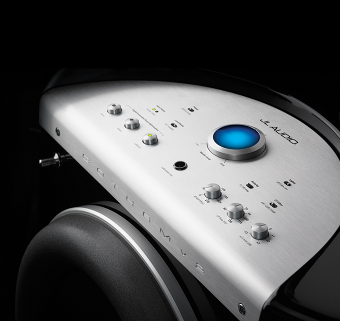
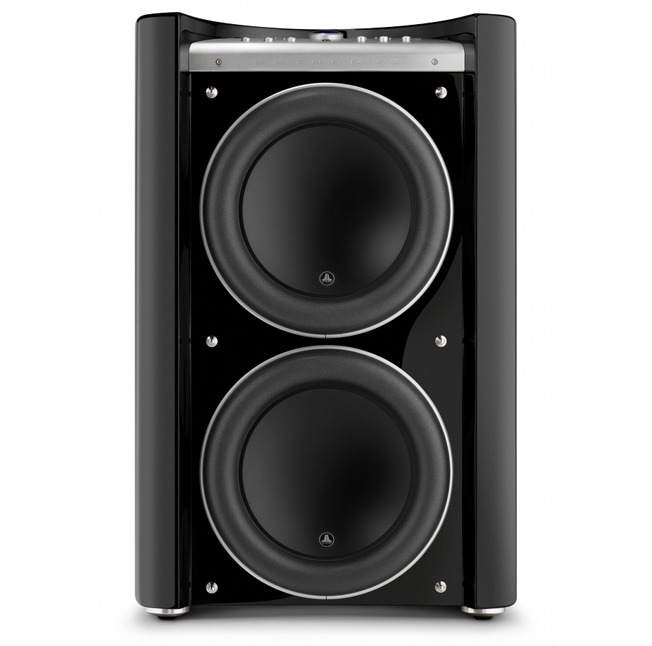

Gotham g213
JL Audio Powered Subwoofer

Gotham g213v2
The g213v2 is the flagship of the JL Audio powered subwoofer line-up, where only the ultimate will suffice, offering 4500 watts of power to drive its twin 13.5-inch active drivers.
Brand
JL Audio
Category
Subwoofer
Overview
Your first look will tell you that you are looking at something special... your first listen will confirm it beyond a shadow of a doubt.
The beauty of the Gotham® v2 extends well beyond its exotic design and exceptional craftsmanship, aiming right at the emotional core of musical and cinematic enjoyment. This is a subwoofer system with limits that exceed the needs of the typical home theater application, delivering a weight and integrity of reproduction that can only come from a system that is always in control. Its allure lies as much in its ability to convey subtleties as in its prodigious output capabilities. It is simply devastating.
A luxurious, handcrafted gloss-black finish is complemented by machined aluminium and stainless steel accents for a look and feel that fits perfectly with the finest home furnishings. More importantly, the beautiful cabinet houses a pair of JL Audio's highest-technology subwoofer drivers. When demanded by program material, the Gotham's prodigious switching amplifier can deliver 4500 watts of RMS power, to take full advantage of the twin drivers' four inches of peak-to-peak excursion capability. This ensures that the Gotham can breeze through material that makes other subwoofers go into clipping, limiting or distress.
A very complete set of signal processing features is easily accessible on the top surface of the Gotham. These include a highly flexible low-pass filter, variable phase, switchable polarity, e.l.f. trim and JL Audio's powerful Digital Automatic Room Optimisation (D.A.R.O.) system. A calibrated microphone is included for the D.A.R.O. system. Input connections are made via unbalanced RCA connections or balanced Neutrik® combo XLR/TRS jacks. Also included is an XLR output to connect a second Gotham® v2 as a slave unit.
Listening to a Gotham® v2 reveals an entirely new dimension of subwoofer performance... a dimension so satisfying that listening to lesser subwoofers will forever become an act of compromise.
- Finish: Gloss Black, hand-finished to the highest furniture-grade standard
- Grille finish: Black fabric (separate grilles for drivers and controls)
- Enclosure construction: Fibreglass, 2-inch (52 mm) wall thickness
Key Features
Power Modes
Off, On or Automatic Signal-Sensing
Digital Automatic Room Optimisation (D.A.R.O)
18-Band Digital Automatic Room Optimisation (D.A.R.O) with included laboratory grade calibration microphone, defeatable.
Level Modes
Reference (fixed gain) or Variable from full mute to +15 dB over reference gain
Light Modes
Off, On or Dim
Low Pass Filter Modes
Off, 12 dB per octave or 24 dB per octave slope
Low Pass Filter Crossover Frequency
Variable from 30 Hz - 130 Hz
E.L.F Trim
Variable from -12 dB to +3 dB at 25 Hz
Phase
Variable from 0 - 270 degrees
Polarity
0 or 180 degrees
Unbalanced Inputs
Stereo or Mono (two RCA Jacks)
Balanced Inputs
Stereo or Mono (two female XLR jacks)
Output To Slave
Balanced (one male XLR jack)
Input Modes
Master or Slave
Specifications
Model
g213v2
Enclosure Type
Sealed, with curved, non-parallel walls
Driver(s)
Twin 13.5-inch (nominal diameter)
Frequency Response (anechoic)
19 - 112 Hz (+1.5 dB)
-3 dB at 17.5 Hz / 120 Hz
-10 dB at 14 Hz / 150 Hz
Effective Piston Area
214.70 sq. in.
(0.1386 sq. m.)
Effective Displacement
773 cu. in.
(12.7 litres)
Amplifier Power
4500 Watts RMS short-term
Dimensions (H × W × D)*
34.13 in. × 21.50 in. × 24.00 in.
867 mm × 546 mm × 610 mm
Net Weight
372 lbs.
(168 kg)
Cabinet Finish
High-Gloss Black
Dimensions Note
The height dimension includes feet, depth dimension includes grilles.
Technology
Loudspeaker Technology
Gotham® and Fathom® subwoofers offer a vast performance envelope that unleashes all of the dynamics in your audio experience. It all starts with exceptional subwoofer drivers.
JL Audio’s engineering department is at the forefront of research into fundamental loudspeaker behavior. JL Audio has developed proprietary electromagnetic and suspension analysis systems and invested heavily in state-of-the-art manufacturing and testing. This has borne subwoofer drivers widely considered as reference standards for linear displacement and dynamic stability. It has also resulted in numerous U.S. and international Patents issued for technologies that refine and extend the performance envelope of the dynamic driver.
Designing and building superior drivers lies at the core of JL Audio’s passion for audio…and this gives JL Audio’s powered subwoofer systems a huge advantage.
DMA-Optimised Motor System
JL Audio's proprietary Dynamic Motor Analysis keeps motor force linear across an extreme range of excursion while maintaining a highly stable magnetic field over a wide power range, resulting in tighter, cleaner and more articulate bass.
OverRoll™ Surround
By extending over the driver's mounting flange, the OverRoll surround uses otherwise wasted diameter so excursion can increase without giving up precious cone area.
W-Cone™ Surround
The W-Cone unit-body cone assembly achieves remarkable stiffness with minimal mass, while also adding the torsional rigidity needed to maintain voice coil alignment at the suspension limits.
Floating-Cone™ Attach Method
This assembly method ensures proper surround geometry in the finished speaker for more accurate excursion control and dynamic voice coil alignment.
Plateau-Reinforced Spider Attachment
Derived from JL Audio's VRC™ technology, this heavy-duty suspension attachment relieves stress from the spider material during high excursion for improved long-term reliability.
Elevated Frame Cooling Technology
Cool air is directed through slots above the top plate and onto the voice coil, improving power handling while reducing dynamic parameter shifts and power compression.
Radially Cross-Drilled Pole Piece
An innovative venting system enhances thermal dissipation and power handling by directing airflow onto the voice coil former in concert with Elevated Frame cooling.
Engineered Lead-Wire System
Carefully designed lead-wire routing and attachment keep wire behavior controlled and quiet even under the most extreme excursion demands.
Precision Built in U.S.A.
JL Audio's Miramar, Florida loudspeaker production facility is among the most advanced in the world, supporting the precision build quality expected of a flagship Gotham platform. In addition to the patented technologies listed above, multiple U.S. and international patents are currently pending.
Electronics Technology
To fully realise the benefits of JL Audio's long excursion drivers, a huge amount of controlled power is needed. These lofty power requirements create a difficult challenge when the realities of typical home electrical circuits are considered.
To solve this, JL Audio's electronics engineering team carefully analysed demanding program material to balance current draw and actual output power requirements against the subwoofer system's impedance characteristics. The result is an advanced switching amplifier design with a massive toroidal transformer and very high output voltage capability, precisely optimised for its driver system.
In the Gotham g213v2, that amplifier delivers clean output voltage equivalent to 4,500 watts RMS while still operating comfortably within a typical household electrical circuit. It may not be magic, but it certainly borders on it.
Amplifier Architecture
Advanced switching amplification, massive toroidal transformer reserves and high output voltage capability work together to deliver huge low-frequency authority with control.
Real-World Usability
Despite its flagship output capability, the Gotham g213v2 is engineered to perform within the limits of a normal domestic electrical supply.
Digital Automatic Room Optimisation (D.A.R.O.)
Murphy's law of low-frequency acoustics says the best sounding subwoofer position is often the least practical one. JL Audio addresses this with Digital Automatic Room Optimisation, helping balance sonic performance, practicality and aesthetics.
The D.A.R.O. system generates a series of calibration tones, measures response at the listening position and automatically configures an 18-band, 1/6 octave equalizer for a flatter in-room result. This makes it possible to achieve smooth, balanced sub-bass from placements that may otherwise have been compromised.
Simple Calibration Process
- Connect the included calibration microphone to the front panel of the subwoofer
- Press the calibrate button on the front panel
- Hold the microphone at the primary listening position
- Complete the one-time setup routine in just a few minutes, with no computer required
High-Damping Feedback Circuitry
Covered by U.S. Patent #6,441,685, this proprietary discrete control circuit helps JL Audio's Class D switching amplifiers maintain an excellent damping factor for improved transient behavior and fidelity.
In addition to the patented technologies listed above, multiple U.S. and international patents are currently pending.
Manufacturing Excellence
JL Audio's flagship subwoofers are not treated like commodity products. Their proprietary driver platforms, complex enclosures and luxury-grade finishing standards demand specialised facilities, disciplined assembly methods and meticulous quality control at every stage.
That commitment is centered in JL Audio's Miramar, Florida factory, where dedicated production teams, precision equipment and documented procedures come together to build Gotham and Fathom subwoofers to a consistently exceptional standard.
Driver Manufacturing
Special patented drivers such as JL Audio's massive W7 and thin-line TW5 platforms require proprietary assembly techniques and tightly monitored production disciplines. The Miramar loudspeaker assembly facility has been specifically designed and equipped to build JL Audio's most advanced loudspeakers with consistency and precision.
Gotham® Enclosure Assembly
Each Gotham enclosure takes more than two weeks to produce, moving through multiple fabrication and finishing stages. The body is moulded in solid fibreglass with proprietary damping technologies and carefully engineered internal bracing to create a highly inert structure.
Furniture-Grade Finishing
With wall thickness exceeding 1 inch (25 mm), each enclosure requires precision CNC machining before skilled craftsmen prepare, finish and hand polish it to the high-gloss, furniture-grade standard expected of a Gotham.
Clean Room Final Assembly
Final assembly, inspection and testing are completed in a clean room environment so the Gotham's performance lives up to the sophistication of its design and construction.
Technician-Led Build Process
Fathom® and Gotham® powered subwoofers are assembled by highly skilled technicians, with each technician responsible for the full assembly process while following documented procedures to ensure quality and consistency.
Precision Workstations
Ergonomic workstations with hydraulic lifts and multiple torque-controlled tools support efficient, repeatable assembly to the exact specifications defined by JL Audio's engineering team.
Testing and Verification
Quality is engineered into every JL Audio product, but it is also verified and documented through defined, repeatable test protocols. Every Fathom and Gotham component is tested individually and as a connected system before assembly, and every finished subwoofer must pass electrical, functional and acoustic testing before shipping to authorised dealers.
Available Finishes
Metal Accent Detailing
Control Surface Finish
Reviews
The absolute sound
Aug 25, 2015
Jonathan Valin
“For those of you with the space and the dough, those of you into low bass (and who isn’t with the right music?), those of you with decent main speakers looking for a ticket to the Big Leagues at a Minor League price, even those of you with ultra-high-end loudspeakers that already have outstanding bass, the Gothams and the CR-1 are the paths to a full-range bliss you’ve never before experienced, because, in my own experience, it’s never before been available at this level of unalloyed satisfaction. Both the Gotham subs and JL’s CR-1 crossover, obviously, get my highest, most unqualified, most enthusiastic recommendation. I just wish all of you could hear them!”
Tone Audio
2009
Jeff Dorgay
"Top of the Mountain"
"The Gotham is a fantastic product that can transform whatever system in which it is placed, no matter how good. If you have the room and the extra power to support it, it is one of the rare pieces of high-end audio gear that will take you somewhere you have never been. Highly recommended."
Home Theater Review
Oct 17, 2008
Andrew Robinson
"One of the fastest subwoofers I've ever encountered, regardless of price. There are many subs that cost way more than the Gotham that can't match its level of performance and output."
Ultra Audio
Apr 1, 2008
Jeff Fritz
"The Gotham g213 produces state-of-the-art bass that will improve the highest of high-end systems. I’ve heard no other subwoofer that can match it."
The absolute sound
Aug 25, 2015
Tone Audio, 2009 by Jeff Dorgay
The published review presents the Gotham as a transformative subwoofer capable of elevating already serious systems into a much more immersive experience.
Luxury Build Quality
★★★★★Source summary
The product page also highlights the Gotham's handcrafted cabinet, premium metal detailing and top-surface control system as part of its flagship positioning.
Downloads & Documentation
JL Audio Gotham & Fathom Series Brochure
Series overview and product family information
Open document
JL Audio Gotham g213 Manual
Operating instructions, setup guidance and controls
Open document
JL Audio g213 Catalogue Sheet
Key specifications and dimensional reference
Open document
Warranty Information
UK Warranty Information – JL Audio’s Home Audio Powered Subwoofer Systems
JL Audio Home Audio Powered Subwoofer Systems are warrantied against defects in materials and workmanship for Three (3) Years from purchase date. Audio Visual Technology Solutions (UK) Limited will, at its discretion, repair or replace any products that exhibit defects in materials and/or workmanship during the warranty period.
Please hold on to your sales receipt! All warranty service requires original sales receipt documentation. The warranty only applies to the original purchaser from an authorised retailer.
Note: Products purchased from unauthorised dealers are not covered under warranty. Please see our list of authorised UK dealers.
Warranty Limitations
The following is not covered under Audio Visual Technology Solutions (UK) Limited’s warranty program:
- Product with defaced, altered or removed serial numbers (no valid, legible serial number = no warranty).
- Product owned by anyone other than the original purchaser from an authorised dealer. (The warranty is not transferable and will not apply to products purchased from unauthorised dealers.)
- Product that has been physically abused (run over by a car or beat with a hammer, for example).
- Product that has not been installed according to the instructions in the owner's manual.
- Product in which repair and/or modification has been attempted by unauthorised parties.
- Product damaged cosmetically due to improper handling or normal wear and tear.
- Product damaged in an accident, due to criminal activity (attempted theft, vandalism, etc.) or by 'acts of God' (flooding, lightning, etc.)
- Custom finishes or other cosmetic treatments applied to products. (Audio Visual Technology Solutions (UK) Limited will not be responsible for restoring or maintaining any custom finishes).
- Installation and shipping costs associated with removing, re-installing or shipping the product to Audio Visual Technology Solutions (UK) Limited for warranty service.
- Audio Visual Technology Solutions (UK) Limited is not responsible for any JL Audio home powered subwoofer products that have been purchased from overseas. Customers must contact there overseas dealer direct for any warranty claims or repairs.
If you need Service on your JL Audio Product:
All warranty returns should be sent to Audio Visual Technology Solutions (UK) Limited freight prepaid through an authorised UK dealer and must be accompanied by proof of purchase (a copy of the original sales receipt). Direct returns from consumers or non-authorised dealers will be refused unless specifically authorised by Audio Visual Technology Solutions (UK) Limited with a valid return authorisation number. Warranty expiration on products returned without proof of purchase will be determined from the manufacturing date code. Coverage may be invalidated as this date is previous to purchase date. Return only defective components. Non-defective items received will be returned freight-collect at the expense of the customer. Customer is responsible for shipping charges and insurance in sending the product to Audio Visual Technology Solutions (UK) Limited. Freight damage on returns is not covered under warranty. Always include proof of purchase (sales receipt).
Note: Products that require inspection and repair should be packed carefully, preferably in the original packaging material. Audio Visual Technology Solutions (UK) Limited may charge the customer under its discretion for supplying new packaging material if deemed that the packaging material supplied by the customer is not fit for shipping of the products after remedial work is complete.